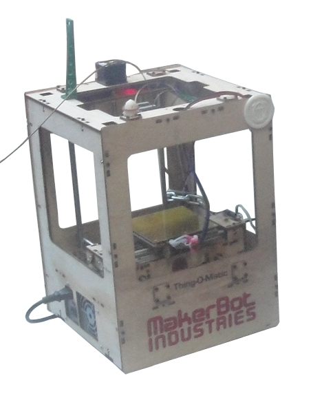
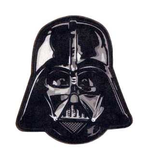

Contenido
[ocultar]Introducción
Primera impresora 3D open-source comprada por el Departamento de Ingeniería de Sistemas y Automática de la Universidad Carlos III de Madrid (UC3M).
El impulsor de la compra fue el profesor Alberto Valero. Se encargo de solicitar el dinero, gestionar la compra y ayudar en la construcción y calibración.
Ficha
|
 |
|
 |


Fotos
Vídeos
Historia
- 12/Oct/2012: Migrada la página de padre desde su página en asrob
- 8/Oct/2011: Ha nacido PADRE. Ha impreso su primera pieza.
- 7/Oct/2011: Se comienza la construcción de PADRE. Vienen estudiantes de la EUTI-UPM a ayudarnos y a aprender para más adelante montar la suya
Enlaces
|
|
Proyecto Clone Wars: Construye tu impresora 3D opensource! |